Realizace
Výběr fotografií
Mobilní učebna v akci: robotika, tablety, 3D modely a badatelská práce ve školách i na letních akcích.
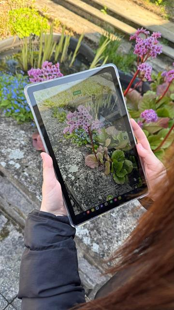
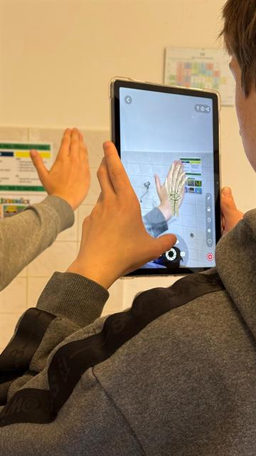
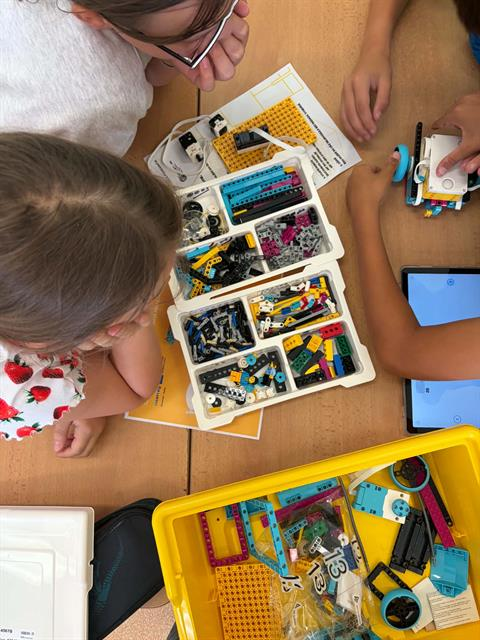
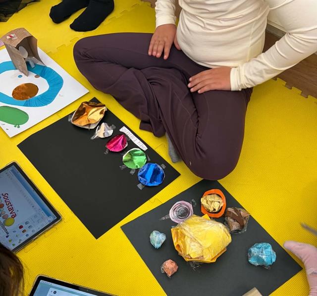
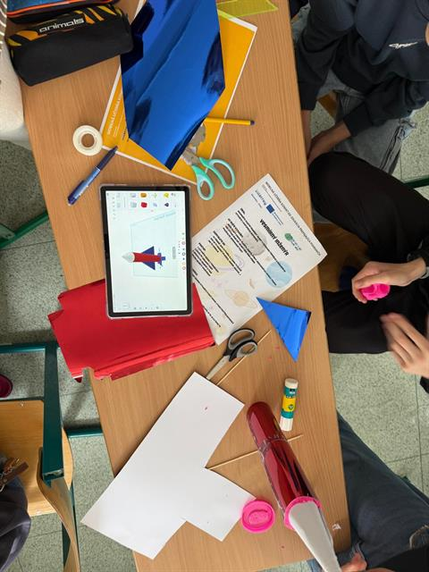
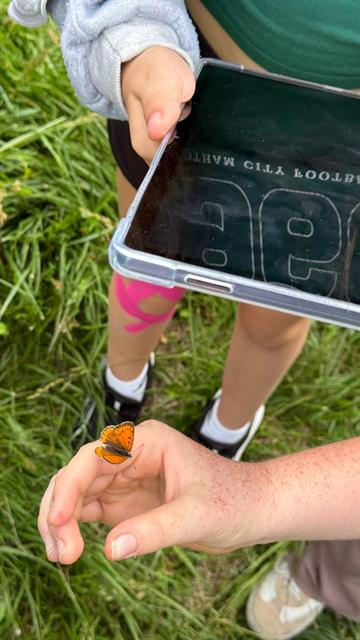
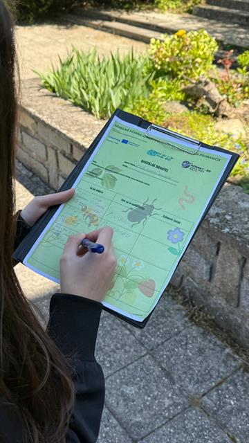
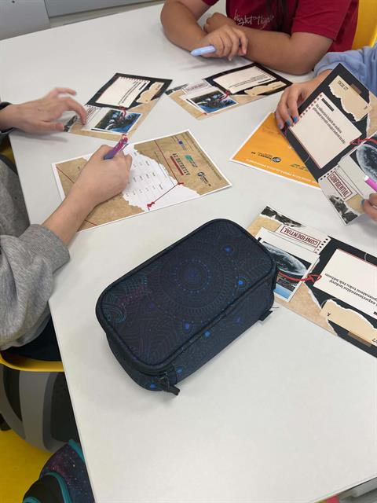
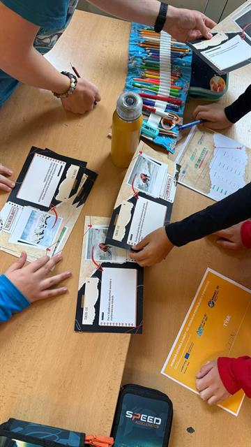
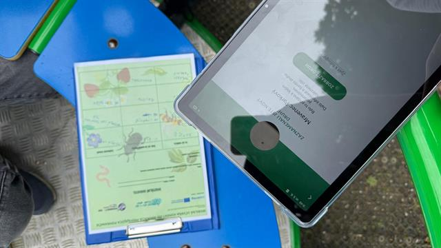
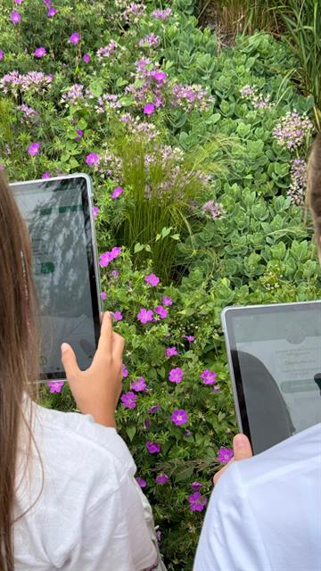
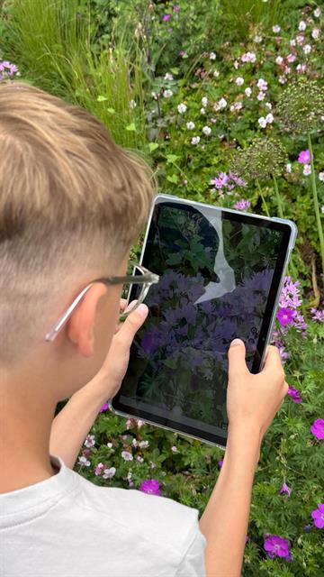
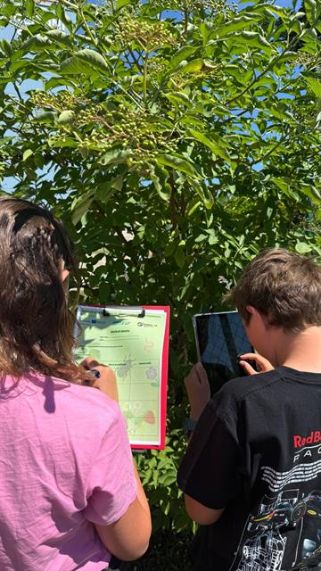
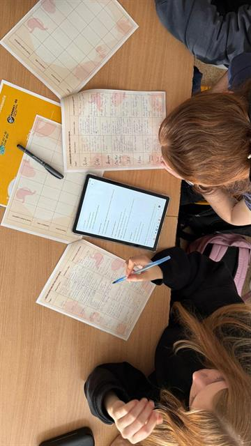
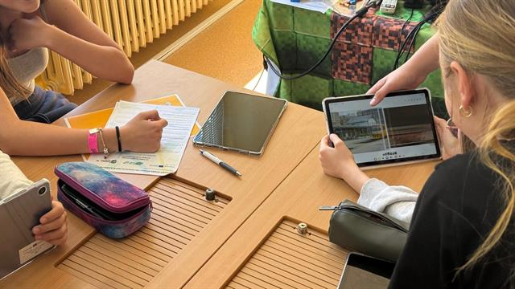
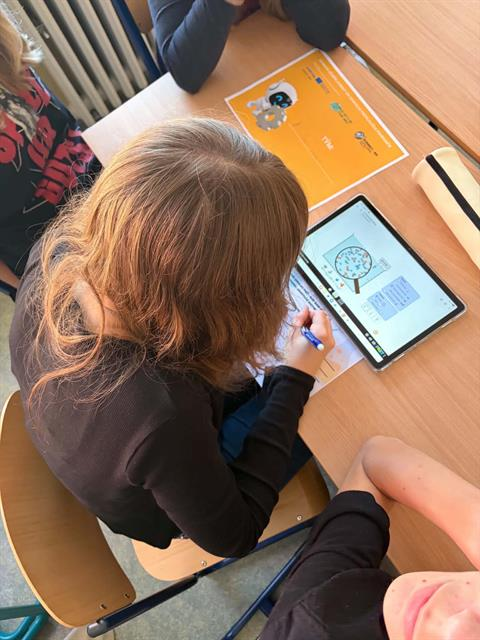
Přehled všech realizovaných workshopů najdete ve Výstupech projektu.